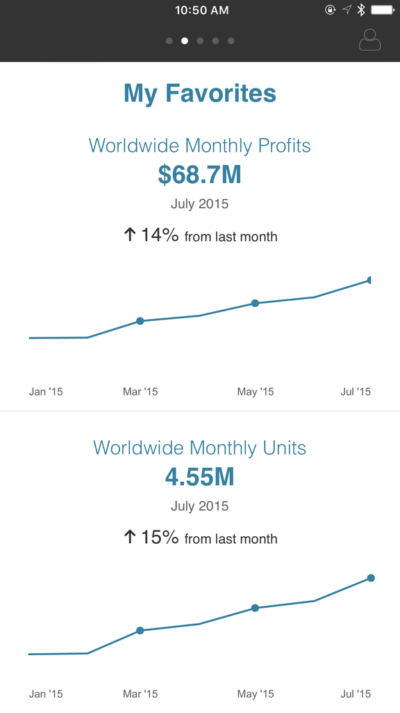

UI & UX DESIGN For Business Intelligence Tool
Full circle of Researches, Usability tests and Designs
for WEB, Native and Hybrid apps, with descridescribed
specifications for Scrum team.
UI/UX DESIGN
CODING
MANAGEMENT
Full circle of Researches, Usability tests and Designs
for WEB, Native and Hybrid apps, with descridescribed
specifications for Scrum team.
Based on prototypes, User testing and etc
designed, described & implemented via html & css with Bootstrap and ExtJS framworks
Design and prototyps for application where user can check alerts
features described and ready for export to Jira